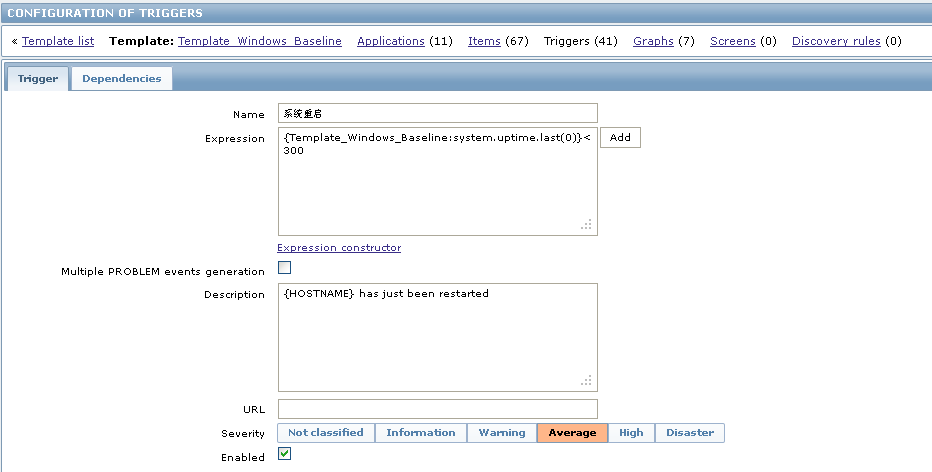
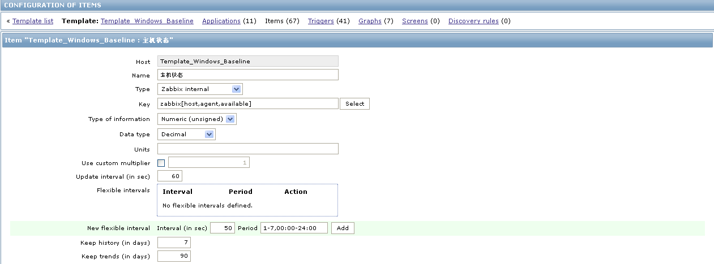

zabbix中文配置指南续
一、说明
关于zabbix的配置其实前面的的文章中已经写得比较详细了（zabbix中文配置指南），相信参考上面所写的内容完全有能力搭建起企业的监控系统。但是企业的监控系统是一个大的工程，不单涉及到服务器、网络设备等内容，还涉及各设备的性能指标、相关协议和时间服务。
时间服务对于监控非常重要，如果被监控设备和服务器的时间不一致，就可能导致监控系统看不到数据，而实际命令测试发现又没问题（指可以通过zabbix_get命令获取监控值）。其实这些问题不仅体现在服务器上也可以出现在网络设备上。时间同步的重要性在windwos的域管理方面体现得更加明显，有兴趣的可以看看domain方面的资料。
之前的内容中有讲到网络设务的SNMP监控也说到了操作系统上的监控方法，但如果需要更加细致的监控图形，需要做的事情还很多，结合zabbix实际的使用情况，于是就有了这篇文章。
二、建立局域网时间服务器
2.1利用监控系统建立linux时钟服务器
2.1.1查看系统版本和相关软件
首先记得查看linux的系统版本，根据不同的系统版本配置linux的源(可参考企业应用监控利器-ZABBIX )及系统时间、时区并安装好相应软件。如图一所示。
- cat /etc/issue
- rpm -qa |grep ntp
图一：系统版本和软件
2.1.2配置ntp.conf文件
其实linux下时间服务器的配置非常简单，只需要搞定一个配置文件就可以了。如图一所示。
- vi /etc/ntp.conf
- restrict default kod nomodify notrap nopeer noquery #<==拒绝 IPv4 的用户
- restrict -6 default kod nomodify notrap nopeer noquery #<==拒绝 IPv6 的用户
- restrict 127.0.0.1 #<==两个是默认值，放行本机来源
- restrict -6 ::1
- restrict 192.168.0.0 mask 255.255.255.0 nomodify #<==放行局域网来源
- restrict 192.168.2.0 mask 255.255.255.0 nomodify
- restrict 172.16.6.0 mask 255.255.0.0 nomodify
- restrict 172.16.1.0 mask 255.255.0.0 nomodify
- server 210.72.145.44 prefer #<==以这部主机为最优先
- server 1.cn.pool.ntp.org
- server 1.asia.pool.ntp.org server 2.asia.pool.ntp.org
图二：ntp.conf设置
2.1.3启动并查看时间服务状态
安装好相关软件并配置好ntp.conf文件后就可以启动ntp服务并通过以下命令查看时间同步的状态。如图三所示。
- service ntpd start
- chkconfig --level 35 ntpd on
- netstat -tlunp |grep ntp
- ntpstat
- ntpq -p
图三：ntpd服务状态
2.2操作系统客户端时间同步配置
2.2.1linux客户端时间同步配置
linux下时间同步客户端的配置非常简单，通过ntpupdate这个指令就可以完成时间同步的设定。可以通过corntab指定设定为定期更新时间。
- crontab -e
- 00 00 * * * /usr/sbin/ntpdate 192.168.0.189 #每天0点定期更新
2.2.2windows客户端时间同步配置
windows下可能通过系统自带的时间服务来更新，但在使用中发现不太好用：没办法做到自定义定期更新而且更新失败后需等下一次更新周期。windwos自带的time服务设定如图四所示。
图四：windows自带时间同步
正因为windows自带的时间同步工具不太好用，网上有很多开源的时间同步客户端。我认为比较好用的是这个nettime工具。虽然是全英文的，但基本上设定很简单，功能也比较齐全，而且还是开源的。它可以支持现有的大部份windwos操作系统（包括32位和64位），软件安装后会自动生成windows服务。可以通过（http://www.timesynctool.com/ ）下载。如图五、图六所示。
图五：nettime工具
图六：nettime工具
2.3网络设备时间同步配置
公司现有网络设备为cisco E4506和cisco c2960。各相关设备的配置如下。
2.3.1Cisco E4506配置
Cisco 4506这类设备有硬件时钟，相关设定如下所示。显示状态如图七所示。
- clock timezone Beijing 8 0 #时区
- clock calendar-valid #设硬件时钟
- ntp source Vlan19 #时间服务器源
- ntp master 3
- ntp server 192.168.0.189 #时间服务器地址
- show ntp status #查看状态
- show ntp associations
图七：cisco 4506时间同步
2.3.2Cisco 2960配置
- clock timezone Beijing 8 0 #时区
- ntp source Vlan19 #时间服务器源
- ntp master 3
- ntp server 192.168.0.189 #时间服务器地址
- show ntp status #查看状态
- show ntp associations
三、建立监控图形
3.1网络设备监控
3.1.1Cisco 2960配置
自从升级了网络设备后就一直在想办法把这些网络设备的性能也监控起来，在网上找了很多的资料也下载了一些模板，使过后才发现不是很靠谱，看来只能靠自已了。这些仅描写一些需要注意的地方，如果看不明白的可以参考一下以前的文档。
SNMP协议在cisco设备中是可以支持查看CPU和RAM性能的，这方面的内容cisco的网站上的内容很丰富。需要注意的是同一型号的设备如果IOS版本不一样它的OID值和相关的设置指令是不一样的。请参考（How to Collect CPU Utilization on Cisco IOS Devices Using SNMP ）。
首先在需要监控的设备上启用snmp协议。
- snmp-server community public RO
- snmp-server enable traps
3.1.2zabbix上Cisco 2960监控项配置
图八：ping check
图九：CPU
图十：RAM
图十一：网卡流量-IN
图十二：网卡流量-OUT
图十三：CPU性能图
图十四：内存性能图
图十五：网卡流量图
3.2其它设定
3.2.1zabbix监控windows服务器可用内存
zabbix2.0版本的监控参数和之前的版本不同，如果有发现监控windows服务器内存不准确的情况，请参考图十六。
图十六：windows可用内存图
3.2.2zabbix获取windows监控值
- zabbix_get -s 192.168.0.49 -p 10050 -k 'perf_counter["\Memory\Page Writes/sec"]' #注意引号
3.2.3zabbix阈值设定
这块所涉及的内容非常多，如果需要详细的了解，建议参考zabbix的官方说明（Supported trigger functions ）。具体请参考图十七、十八、十九。
图十七：windows网络不可用 
图十八：windows重启 
图十九：windows主机状态
zabbix安装指南：http://waringid.blog.51cto.com/65148/904201
zabbix使用指南：http://waringid.blog.51cto.com/65148/945352
zabbix使用手册：http://down.51cto.com/data/462129
zabbix配置手册：http://down.51cto.com/data/469472
5
分享
收藏